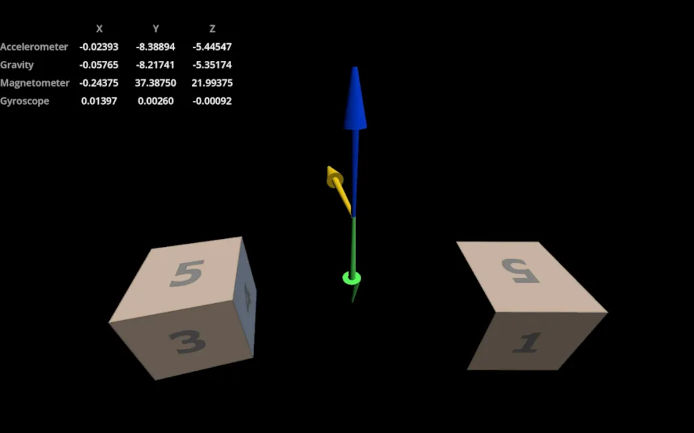
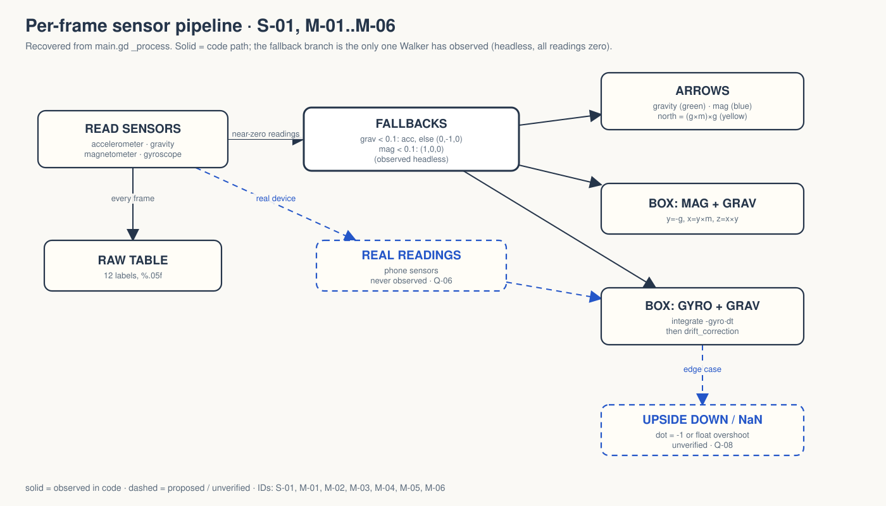

Godot's mobile/sensors demo in Walker: raw accelerometer, gravity, magnetometer and gyroscope readings, three arrows, and two boxes oriented two different ways.
OBSERVED INFERRED MISSING PROPOSED
Tech demo, not a game. No gate signed. → GDD.md

OBSERVED godot/screenshots/sensors.webp, shipped upstream. Walker ran headless, where all four sensors read (0, 0, 0).

Only the fallback branch has been observed.
With every reading zero, gravity becomes (0, −1, 0) and north becomes (1, 0, 0). All five bases are finite with determinant one. fallback-20260926.log
That proves the demo does not crash. It proves nothing about sensors. README: “Desktop zero readings are not proof that mobile sensors work.”
checks pass: twelve raw labels and five finite bases. No accuracy, motion, magnetic interference, drift or device test.
The code teaches honestly. The desktop lies by looking right. Q-06 before anything else.